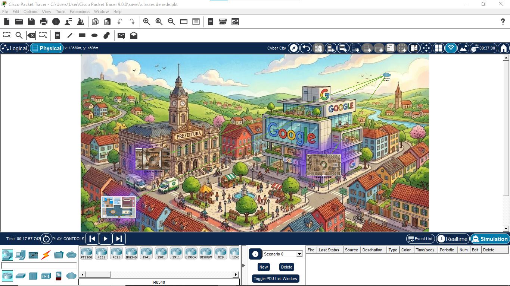
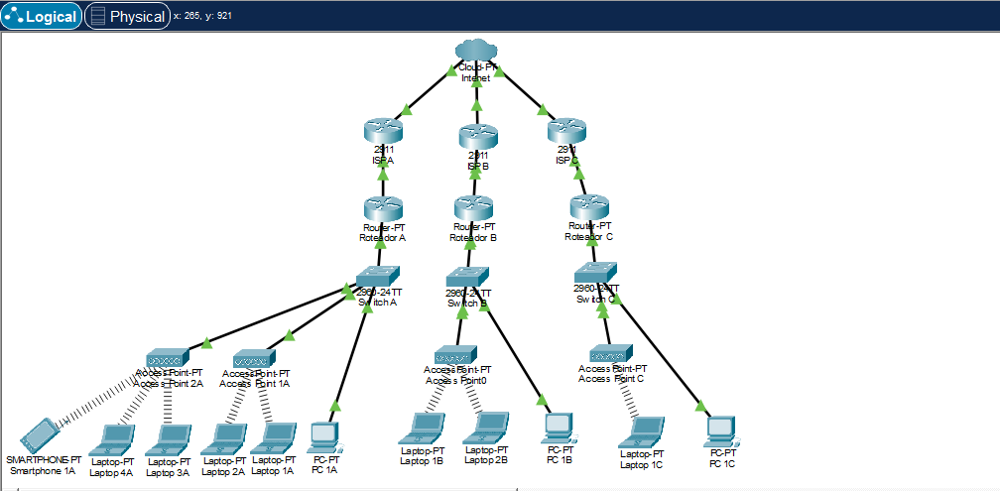
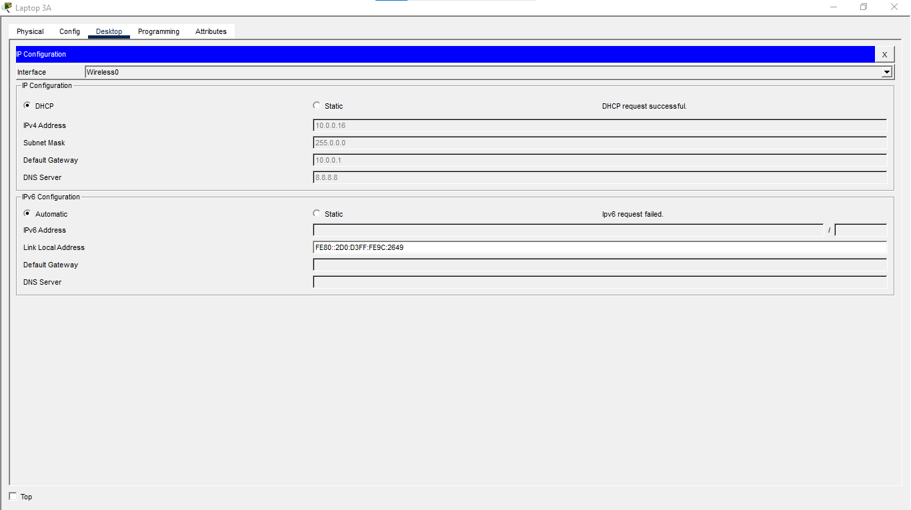
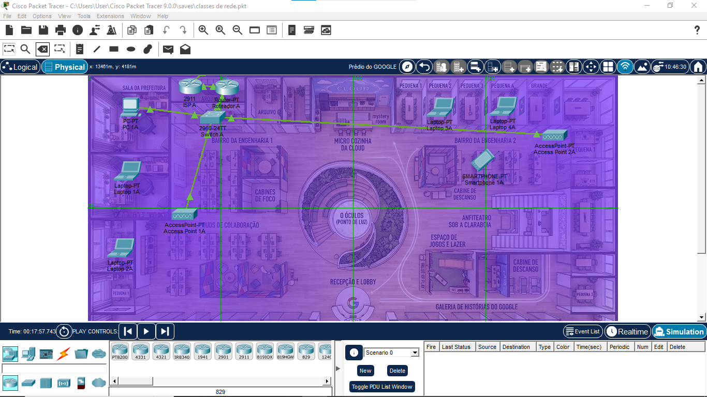
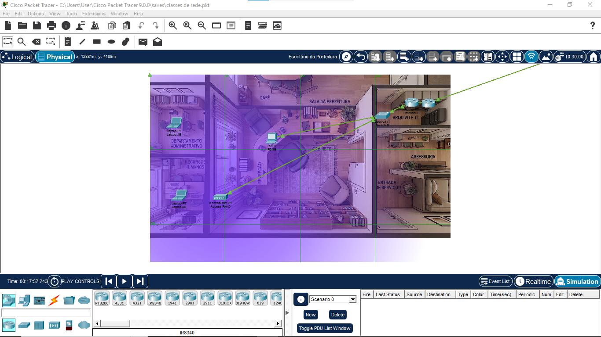

Empresa
Ambiente utilizado para representar a rede de maior escala da simulação.
REDES • CISCO PACKET TRACER • SIMULAÇÃO
Uma cidade virtual criada para transformar fundamentos de redes em uma experiência visual, prática e conectada.
VISÃO GERAL
Cyber City foi desenvolvido no Cisco Packet Tracer como um exercício prático para aplicar fundamentos de redes de computadores. Em vez de representar a infraestrutura apenas por diagramas abstratos, organizei a simulação como uma pequena cidade, utilizando diferentes ambientes para visualizar redes com dimensões e necessidades distintas.

CONCEITO
A cidade foi dividida em três cenários: uma empresa de maior porte, uma prefeitura e uma residência. A proposta foi utilizar esses ambientes como uma representação didática de redes com diferentes escalas, tornando mais intuitiva a relação entre quantidade de dispositivos, endereçamento e infraestrutura.
Ambiente utilizado para representar a rede de maior escala da simulação.
Cenário intermediário utilizado para visualizar uma segunda estrutura de rede.
Ambiente menor utilizado para representar uma rede doméstica.
A associação com classes A, B e C foi utilizada como recurso didático durante o estudo de fundamentos de endereçamento IPv4. Em redes modernas, o dimensionamento é realizado principalmente por meio de CIDR e subnetting.
ARQUITETURA
Além da representação física da cidade, a infraestrutura foi organizada em uma visão lógica para visualizar com mais clareza a relação entre roteadores, switches, pontos de acesso e dispositivos finais.

CONFIGURAÇÃO
Configuração e identificação de endereços IPv4 em diferentes redes.
Aplicação de máscaras para compreender o tamanho e os limites de cada rede.
Uso de atribuição automática de endereços para dispositivos da simulação.
Configuração de gateways para representar a saída dos dispositivos de suas redes locais.
Organização de dispositivos utilizando conexões cabeadas e pontos de acesso sem fio.
Construção das visões física e lógica da infraestrutura.

AMBIENTES
Os diferentes ambientes foram construídos para tornar visível como computadores, notebooks, smartphones, switches, roteadores e pontos de acesso podem compor uma infraestrutura de rede.


APRENDIZADOS
O projeto me ajudou a compreender redes não apenas como uma sequência de configurações, mas como sistemas formados por dispositivos, endereços, caminhos e diferentes camadas de infraestrutura que precisam funcionar de maneira organizada.
Transformar a rede em uma cidade foi a forma que encontrei de tornar visível aquilo que, no início, parecia abstrato.